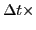
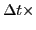

Next: About this document ... Up: Summer School on Materials Previous: Exercise 3: Car-Parrinello vs. Born-Oppenheimer
Time permitting, try the following optional exercises:

rdf.x input.
You will have to calculate
Then calculate the slope in that regime by choosing Data -> Transformations ->
Regression. Under `Restrictions' select `Region 0' to include only the range of
interest. The output in the popup console will give the slope, which will be
in units of Bohr /iteration. To convert it to more useful units, remember
that each iteration corresponds to a time
/iteration. To convert it to more useful units, remember
that each iteration corresponds to a time  atomic units (
0.024189 fs); and 1Å = 1e8 cm = 0.529177 Bohr.
atomic units (
0.024189 fs); and 1Å = 1e8 cm = 0.529177 Bohr.
Use the Einstein relation to calculate the diffusion coefficient:
A typical liquid has  cm
cm /s. How does this compare to your
data?
/s. How does this compare to your
data?
Look at the MSD curve at 3000 K, this time focusing on the solid regime only (i.e., before melting). Where does it plateau? (Since the simulation is out of equilibrium for the solid regime, the plateau may not be perfect).
What RMS amplitude of vibration does this correspond to?
What percent of the silicon nearest-neighbor distance is your RMS vibration amplitude?
Does this match the Lindemann criterion?
Calculate the velocity autocorrelation function for only the liquid regime of the 3000 K simulation:
./vac.xFollow the on-screen instructions, using the starting frame corresponding to the liquid regime, as determined from the MSD.
Plot the VAF and use it to calculate the diffusion coefficient from the
Green-Kubo relation:

Essentially, this amounts to cumulatively summing the VAF as a function of time
and then multiplying it by 1/3 of the sampling interval  . The
cumulative sum can be done in xmgrace using the Integration option under
Data -> Transformations.
. The
cumulative sum can be done in xmgrace using the Integration option under
Data -> Transformations.
What do you get as the value of your diffusion coefficient? Convert your result
to cm /s (note that the code outputs velocities in atomic units = 2.1877e6
m/s).
/s (note that the code outputs velocities in atomic units = 2.1877e6
m/s).
How does this value compare to the one from the MSD?
Does it change if you run your liquid simulation for longer (remember that diffusion coefficients can take a long time to converge)?
Brandon Wood 2009-07-29